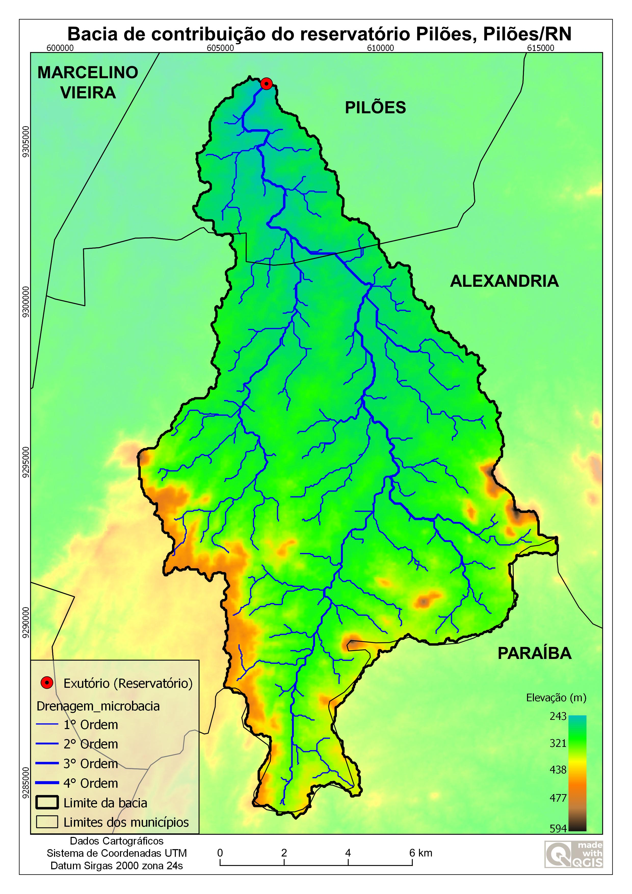

Bacias Hidrográficas
Uso do QGIS na delimitação de bacias
By Hermínio Sabino e Colaboradores
June 28, 2021
Como colocado na lei das águas 9.433/97 a bacia hidrográfica é a unidade de planejamento e um sistema de administração de recursos hídricos que atenda as necessidades regionais
Bacia Hidrográfica é a área ou região de drenagem de um rio principal e seus afluentes. É a porção do espaço em que as águas das chuvas, das montanhas, subterrâneas ou de outros rios escoam em direção a um determinado curso d’água, abastecendo-o.
Elementos de uma bacia hidrográfica
Veja a definição de cada elemento da bacia:
- Nascente: local onde se inicia uma bacia hidrográfica. Geralmente é o ponto mais elevado do relevo e também onde se encontra a principal nascente do rio que dá nome à bacia.
- Rio principal: rio de maior volume e extensão da bacia. Recebe águas dos rios menores que têm função de abastecê-lo. Divisor de águas: estruturas do relevo que têm o papel de dividir as áreas das bacias. Normalmente são morros, serras, picos, montanhas ou outras estruturas elevadas do relevo.
- Afluentes: consistem nos rios menores que deságuam no rio principal e têm a função de abastecer esse rio maior.
- Foz: é o final da bacia e o local onde as águas encontram o oceano ou deságuam em uma bacia hidrográfica maior. É também conhecida cientificamente como exutório. Pode ser do tipo estuário ou delta.
Tipos de bacias hidrográficas
Nem todas as bacias hidrográficas são iguais, diferenciando-se no tamanho, no perfil do relevo, na estrutura territorial e até mesmo nas suas funções. Os tipos de bacias hidrográficas são definidos pelo destino das águas dessa bacia. Existem vários padrões de drenagem das águas dos rios, que se direcionam a vários lugares.
Vamos identificar quais são os tipos de bacias hidrográficas e o perfil de drenagem dessas águas.
- Exorreicas: aquelas bacias que as águas escoam diretamente para o mar; são as mais comuns no Brasil.
- Endorreicas: aquelas bacias que as águas deságuam em lagos, lagoas ou em algum mar fechado.
- Arreicas: aquelas bacias onde as águas não se direcionam a um lugar específico, perdendo-se no meio do caminho, podendo evaporar ou infiltrar no solo.
- Criptorreicas: bacias que se direcionam ao interior da Terra, alimentando, assim, lagos, cavernas, grutas e rios subterrâneos.
Uso do QGIS na delimitação de bacias hidrográficas usando dados SRTM
Agora que já vimos um pouco da teoria, vamos mostrar na prática de delimitação de bacias hidrográficas usando o software QGIS e dados SRTM. No exemplo usei um reservatório (Pilões) como sendo meu exutório e então delimitei a bacia de contribuição. Você pode assistir toda a playlist no canal HS GEOTEC onde mostro o passo a passo de como fazer a delimitação e também a criaçãod e layout de impressão, como o mostrado a baixo
Exemplo de layout

- Posted on:
- June 28, 2021
- Length:
- 3 minute read, 450 words
- See Also: